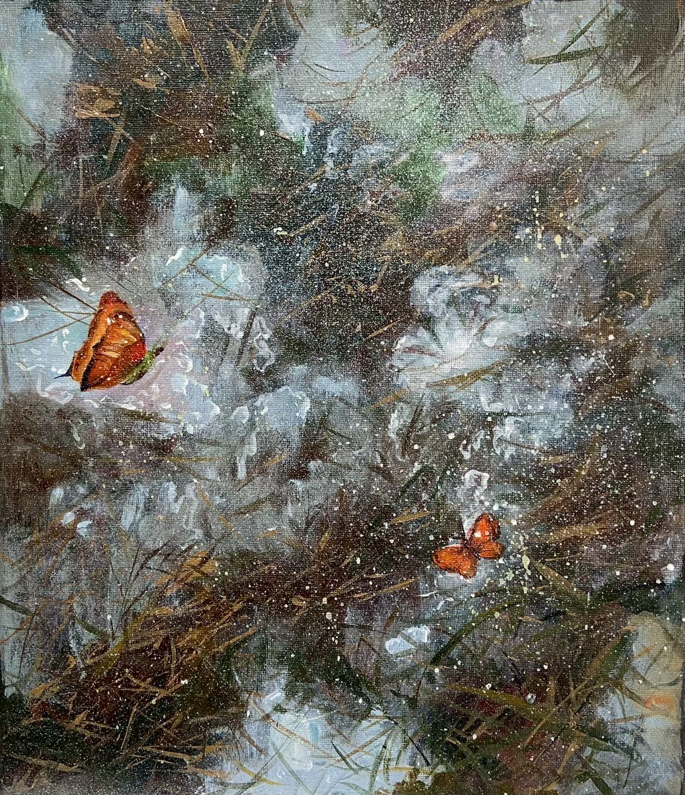
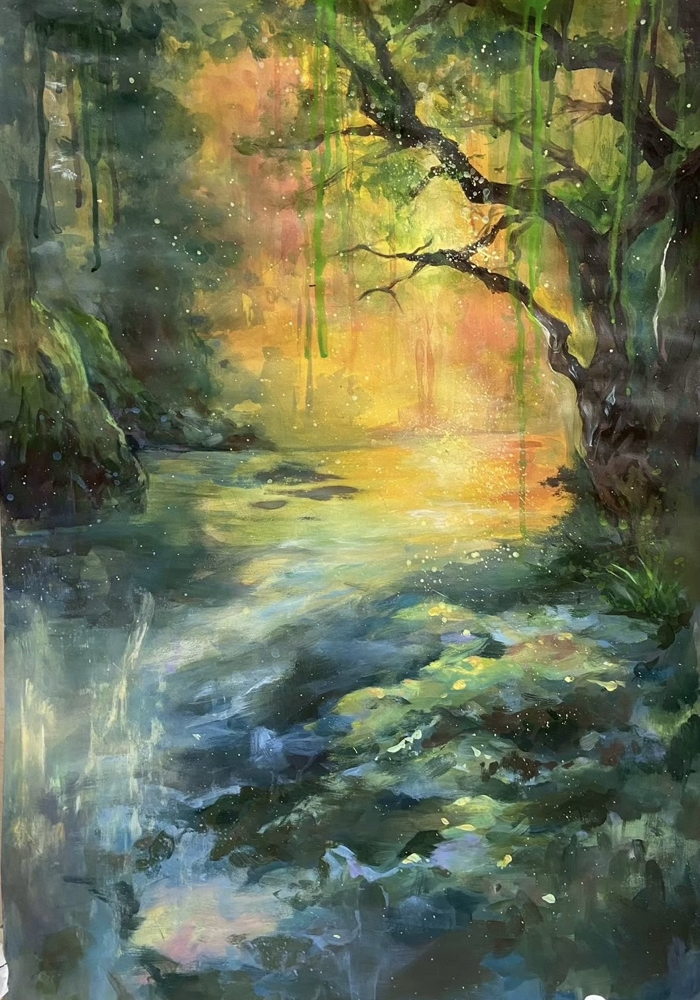
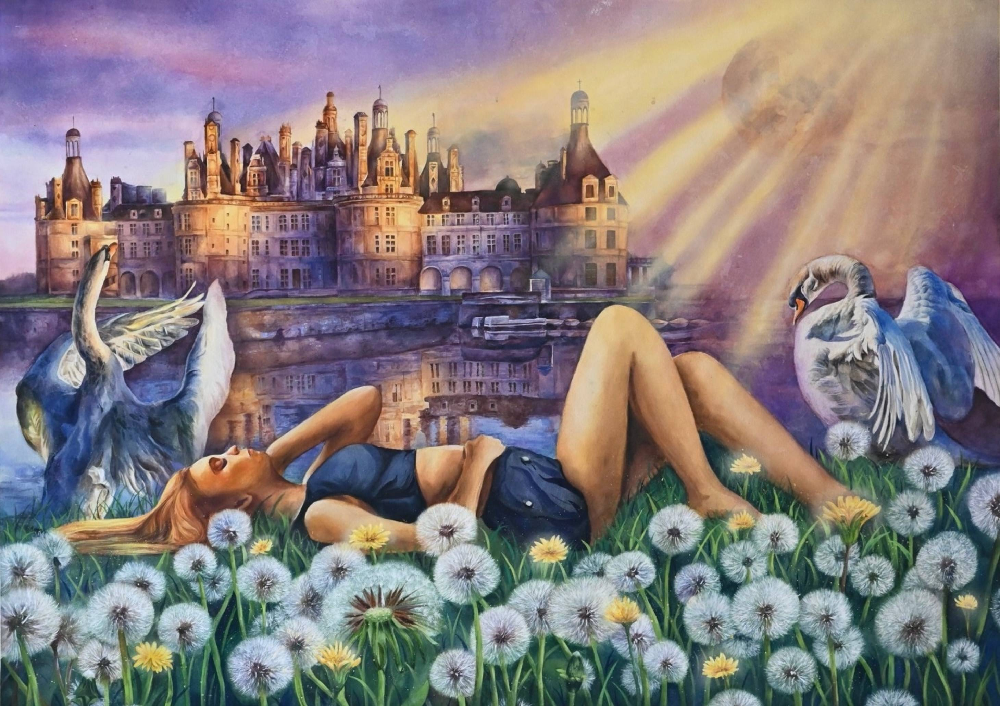
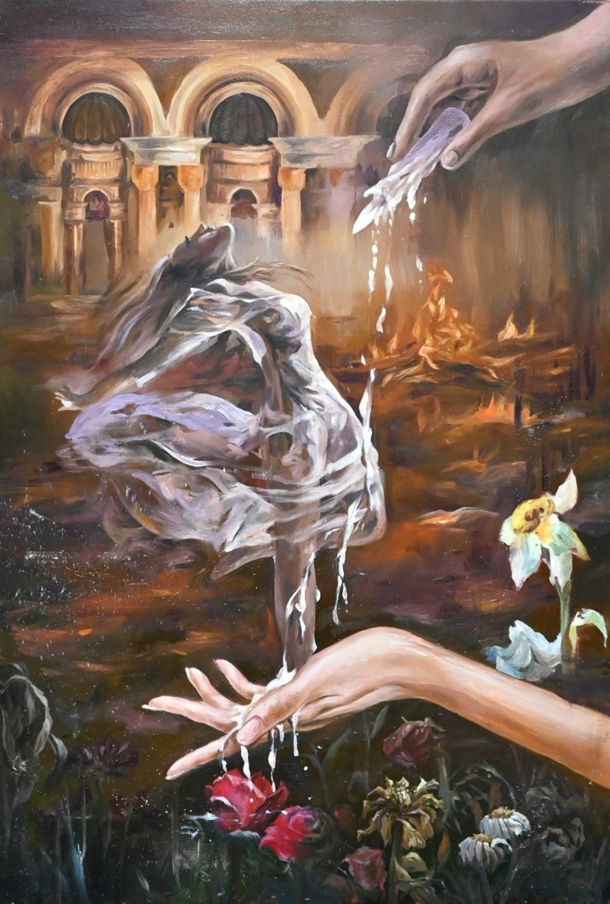
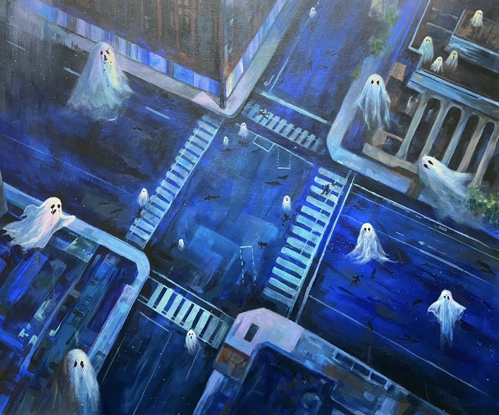
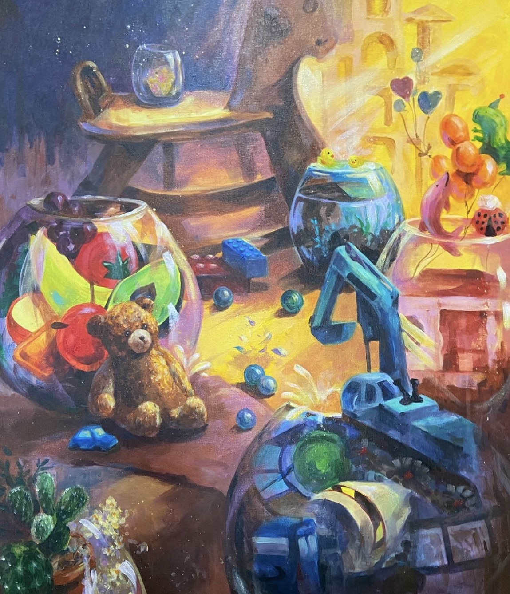

<!DOCTYPE html>
<html lang="zh-Hant"></html>
<head>
<title>彩繪作品 painted works

</title>
<meta charset="UTF-8">
<meta name="viewport" content="width=device-width, initial-scale=1">
<link rel="stylesheet" href="https://www.w3schools.com/w3css/5/w3.css">
<style>
body {font-family: "Times New Roman", Georgia, Serif;}
h1, h2, h3, h4, h5, h6 {
  font-family: "Playfair Display";
  letter-spacing: 5px;
}
/* Extend the width of the footer button */
.footer-button {
    display: block;
    width: 100vw; /* Full viewport width */
    margin-left: calc(-50vw + 50%); /* Center and extend to edges */
    text-align: center;
    padding: 10px 0;
    background-color: #f1f1f1; /* Adjust background color if needed */
  }

  /* Ensure the footer is a full-width rectangle */
  footer {
    width: 100vw; /* Full viewport width */
    margin-left: calc(-50vw + 50%); /* Center and extend to edges */
    background-color: #f1f1f1; /* Adjust background color if needed */
    padding: 20px 0; /* Ensure consistent padding */
  }

  .footer-button {
    text-align: center;
    color: #000; /* Adjust text color if needed */
    text-decoration: none;
  }

  /* Add background color to the '看更多' button */
  .more-button {
    background-color: #d2b48c; /* Light brown color */
    color: #000; /* Black text color */
    padding: 10px 20px;
    border-radius: 5px;
    text-decoration: none;
    display: inline-block;
  }

  .more-button:hover {
    background-color: #c2a378; /* Slightly darker brown on hover */
  }

  /* Remove gray overlay from images */
  .w3-opacity-min {
    opacity: 1 !important; /* Ensure full opacity */
  }

  /* Carousel styles */
  .carousel {
    width: 100vw; /* Full viewport width */
    margin: 0 auto; /* Center the carousel */
    overflow: hidden;
  }

  .carousel img {
    width: 100%; /* Ensure images fit within the carousel */
    height: auto; /* Maintain aspect ratio */
    display: block;
  }

  /* Rectangle block styles */
  .rectangle-block {
    width: 100vw; /* Full viewport width */
    margin-left: calc(-50vw + 50%); /* Center and extend to edges */
    height: 100px; /* Reduced back to 100px */
    background-color: #b49d8f; /* Updated color */
  }
</style>
</head>
<body>

  <!-- Navbar (sit on top) -->
  <div class="w3-top">
    <div class="w3-bar w3-white w3-padding w3-card" style="letter-spacing:4px;">
      <a href="#home" class="w3-bar-item w3-button">彩繪作品 painted works

      </a>
      <!-- Right-sided navbar links. Hide them on small screens -->
      <div class="w3-right w3-hide-small">

      </div>
    </div>
  </div>

 

  
  <!-- Rectangle block below carousel -->
  <div class="rectangle-block"></div>

  <!-- Page content -->
  <div class="w3-content" style="max-width:1100px">

    

    <!-- About Section -->
    <div class="w3-row w3-padding-64" id="about">
      <div class="w3-col m6 w3-padding-large w3-hide-small">
        
      </div>

      <div class="w3-col m6 w3-padding-large">
        <h5 class="w3-center">〈Spring day〉<br>2025/壓克力、畫布/54.6 x 78.7 cm</h5>
        <p class="w3-large"> </p>
        <p class="w3-large w3-text-grey w3-hide-medium"><br>
          對於剛結束一年備考長跑的人來說，考試的結束並不等同於壓力的瞬間真空。雖然物理上的「大雪（考試壓力）」已經消融，但土地依然濕冷，空氣中那種刻骨銘心的緊張感，就像殘留的寒意，並不會隨著考卷的交出而立即蒸發。因此我以蝴蝶和雪地作為意象，殘雪的草地象徵著新的開始與希望，而蝴蝶代表著「自由」與「靈魂的放鬆」。在寒冬中蜷縮了一年，翅膀還帶著冰冷的濕氣，還不敢展翅高飛的狀態，正是我剛考完學測及術科考試的心境。
        </p>
      </div>
    </div>

     <!-- About Section -->
    <div class="w3-row w3-padding-64" id="about">
      <div class="w3-col m6 w3-padding-large w3-hide-small">
        
      </div>

      <div class="w3-col m6 w3-padding-large">
        </h1><br>
        <h5 class="w3-center">〈流光之森〉<br>2025/廣告顏料、壓克力、牛皮紙/55x 79 cm</h5>
        <p class="w3-large"> </p>
        <p class="w3-large w3-text-grey w3-hide-medium">
          <br>沒有夢想也沒關係嗎?<br>這是我在高一時常常迴盪在我心底的聲音。看著同學們口口聲聲地說出未來想就讀的科系、想從事的工作、甚至擁有鮮明的自我創作風格，沒有夢想只能追求第一志願的我似乎格格不入，我不敢在眾人面前說出我沒有夢想的事實，自己內心也不敢承認，在這迷茫的時期，我開始創作這幅畫後，但我僅僅畫了一半就擱置在一旁，這一放就放了兩年，直到高三下才決定要將它完成，兩年後，我還是不確定我的夢想，但我找到了一絲絲光，終於發現了我喜歡的方向，從單純的畫風景，畫著畫著就願意面對過去迷茫的自己，也能溫柔地擁抱曾經的我。


        </p>
      </div>
    </div>

    <!-- About Section -->
    <div class="w3-row w3-padding-64" id="about">
      <div class="w3-col m6 w3-padding-large w3-hide-small">
        
      </div>

      <div class="w3-col m6 w3-padding-large">
        <h5 class="w3-center">〈我在遠處為了你的幸福而祈禱〉
          <br>2023/水彩、壓克力/104 x 76 cm
        </h5>
        <p class="w3-large"> </p>
        <p class="w3-large w3-text-grey w3-hide-medium"><br> 回憶是一個人存在過的證明。<br> <br>
          思念像秋天的落葉，一不注意便落在掌心；思念像冬天的積雪，堆疊在心中，久久無法消融。眼睛重新閉上又睜開時，曾希望這是一個能安心地醒來的早晨，像什麼事都沒發生一樣，如果時間能夠倒退的話，比起莽撞，我能夠溫暖地呼喚著送走你嗎？珍貴的你對我來說，在一束光下，伴著思念的風，靜謐地訴說著愛意，你留下的溫暖讓眼前的事物顯得如此美好，神聖又永恆，好想讓時間停留在這一刻，但似乎到了不得不向前走的時候了。<br>
          <br>
          無論在怎樣的未來，絕對不會忘記那充滿愛意的微笑，我會在遠處為了你的幸福而祈禱。
          思念你的心像一縷春風，輕輕拂過讓心中的枝椏茁壯，也像夏日的小溪，讓凍寒的心再度暖和。


        </p>
      </div>
    </div>

    <!-- About Section -->
    <div class="w3-row w3-padding-64" id="about">
      <div class="w3-col m6 w3-padding-large w3-hide-small">
        
      </div>

      <div class="w3-col m6 w3-padding-large">
        <h5 class="w3-center">〈重生〉
          <br>2025/油畫、畫布/116.5 x 80 cm
        </h5>
        <p class="w3-large"> </p>
        <p class="w3-large w3-text-grey w3-hide-medium">
          <br>生命是一場盛大的腐爛，爛的是那腐朽的外皮，意外露出那死寂的心，曾經的良辰美景，對世界真善美的嚮往，如今早已在壓抑而幽微的潮濕中發酵，變得麻木、迷失、歇斯底里，逐漸凋零成我曾經厭惡至極的模樣。<br> <br>

          不甘沈淪在腐爛的屍堆中，拼命的掙扎、撕碎又墜落，一步步重塑自我又接連被打碎，宛如低溫蠟燭那苦樂兼具造成的灼傷，誤以為凝固的蠟似乎堅強到足以抵抗下次燃燒，殊不知反噬的威力更加強大，但卻燒也燒不掉心底的陰鬱，即使心中還是留存著一束忽明忽暗的光，但我早已墜落於這深藍之淵，交織、消融、湮沉。<br>
          <br>

          「抬起頭吧！看看這世界其他的美好。」<br> <br>

          面對自己的青春，忽略掉令人印象深刻的痛楚，其實在角落仍有萌芽的希望，也許是痛苦燃燒殆盡的灰燼，化成了養分，讓陰鬱死寂的房間也有了生氣，直面那種腐爛的根源，我想衝動地放火燒盡，不願再被黴菌的孢子感染、吞噬，即使經歷過灼傷，但浴火才能重生，雖然痛苦，但我想除去這陳年的陰鬱濕氣。<br>
          <br>

          經過痛苦的洗禮，打碎了完美但脆弱的假象，揭開命運的詛咒，沖破束縛自己的命運之繭，真正在繁花中翩然舞動。

          <br><br>
      </div>
    </div>

    <!-- About Section -->
    <div class="w3-row w3-padding-64" id="about">
      <div class="w3-col m6 w3-padding-large w3-hide-small">
        
      </div>

      <div class="w3-col m6 w3-padding-large">
        <h5 class="w3-center">〈我在夢中驚嘆〉
          <br>2025/壓克力、畫布/72.5 x 60.5 cm
        </h5>
        <p class="w3-large"> </p>
        <p class="w3-large w3-text-grey w3-hide-medium"><br> 據說人一天會做6個夢，但我不太記得我的夢境。<br> <br>
          我的夢大多都是恐怖類型，而這幅作品也是其中之一，我夢到自己飄在空無一人的街道上，條條大路卻不知為何一輛車也見不著，緊張地環顧四周，發現剛才與我擦肩而過的人們，正快速地套上白布，我也亦步亦趨地跟上。<br> <br>
          套上後，彷彿穿了加速器般，雙腳漸漸離開地面，雙腳消失，空氣愈發稀薄，往下一看，啊！原來我們都飛了起來。<br> <br>
          地下是躺著的黑色軀殼，只是肉體，沒有靈魂。<br> <br>

          <br><br>
      </div>
    </div>


    <!-- About Section -->
    <div class="w3-row w3-padding-64" id="about">
      <div class="w3-col m6 w3-padding-large w3-hide-small">
        
      </div>

      <div class="w3-col m6 w3-padding-large">
        <h5 class="w3-center"> 〈存〉
          <br>2025/壓克力、畫布/72.5 x 60.5 cm
        </h5>
        <p class="w3-large"> </p>
        <p class="w3-large w3-text-grey w3-hide-medium"><br>
          小時候的物慾看起來很容易被滿足，但長大後才發現那些玩具其實並不便宜，也因此理解賺錢的不容易。作品想表達對童真的嚮往以及自己眼裡不高的物慾，但並不想要回到童年，如同彼得潘一樣變成長不大的小孩，因此將這些玩具都放在玻璃中蓋著，想要隔絕成長的灰塵，保持著最純真的一片淨土。

          <br><br>
      </div>
    </div>


    <!-- Footer -->
    <footer class="w3-center" style="width:100vw;margin-left:calc(-50vw + 50%);background-color:#debcb1;padding:20px 0;">
      <p class="mt-4" style="margin:0;"><a href="../../index.html" style="display:block;width:100vw;margin-left:calc(-50vw + 50%);text-align:center;padding:10px 0;background-color:#debcb1;color:#000;text-decoration:none;">回首頁</a></p>
    </footer>

</body>

</html>

